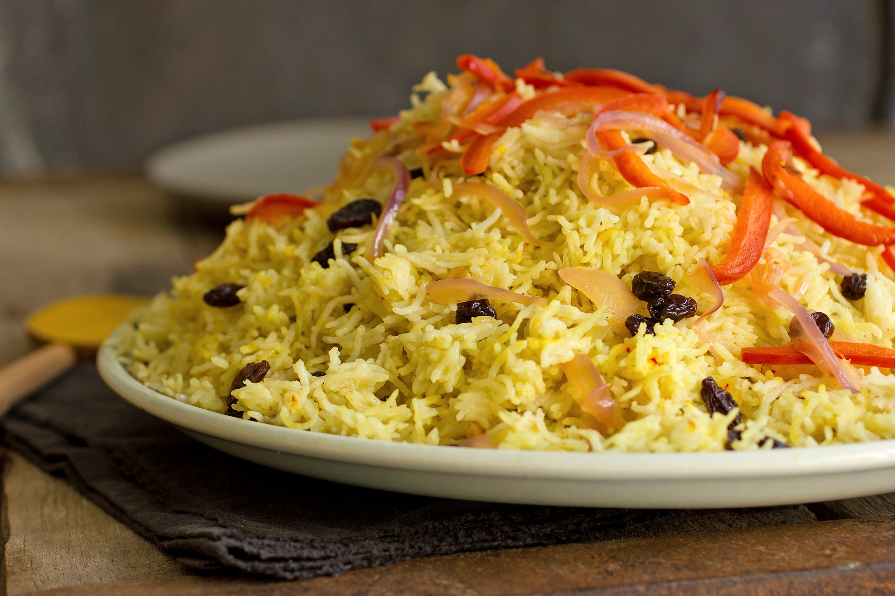
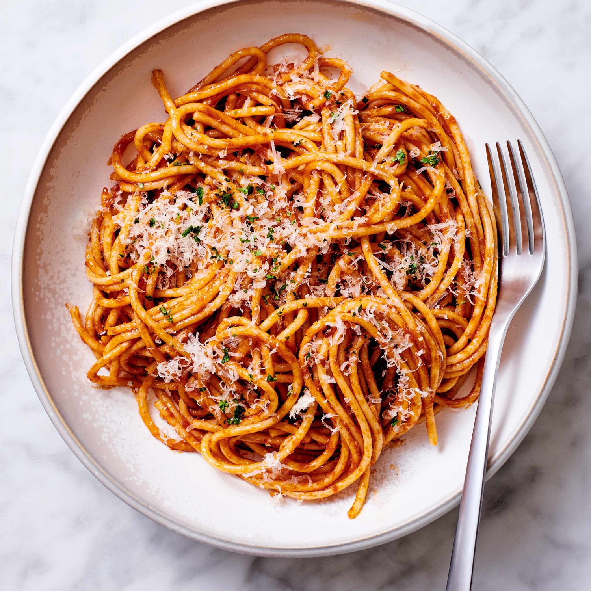
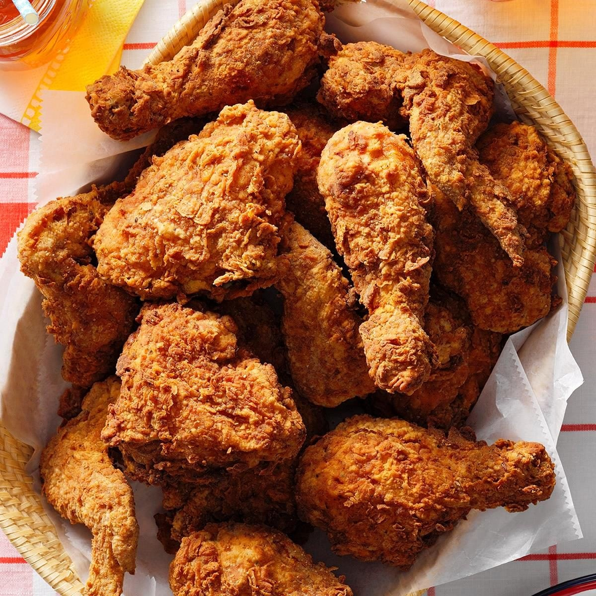
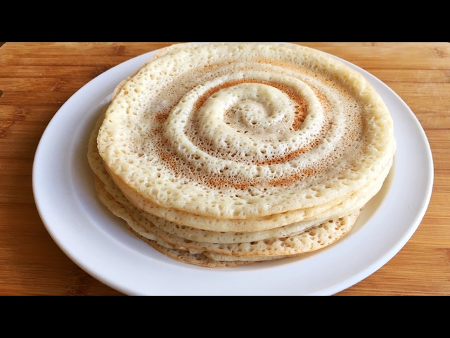

rice
Bariisku waa cunto muhiim ah oo ay dad badan cunaan. Waxaa lala cunaa hilib ama khudaar. Waa cunto tamar badan leh.
pizza
Pizza waa cunto caan ah oo laga jecel yahay dunida oo dhan. Waxaa laga sameeyaa bur, farmaajo iyo waxyaabo kale oo lagu daro.

burger
Burger waa cunto ka kooban rooti, hilib, khudaar iyo farmaajo. Badanaa waxaa lala cunaa baradho shiilan. Waa cunto ay dad badan jecel yihiin.

tea somali
Shaaha Soomaalidu waa cabitaan dhaqameed. Waxaa laga sameeyaa shaah, caano, sonkor iyo xawaash. Waxaa badanaa la cabbaa xilliyada nasashada.

pasta
Baasto waa cunto caan ah oo asal ahaan ka timid Talyaaniga. Waxaa lagu kariyaa maraqyo kala duwan. Waa cunto fudud oo macaan.
cake
Keeggu waa macmacaan macaan. Waxaa badanaa la cunaa xafladaha iyo munaasabadaha gaarka ah.

chicken
Digaaggu waa cunto laga helo makhaayado badan. Waa la dubi karaa ama la shiili karaa. Dad badan ayaa jecel dhadhankiisa.

canjeero
Canjeeradu waa cunto dhaqameed Soomaaliyeed oo aad loo jecel yahay. Badanaa waxaa la cunaa xilliga quraacda iyadoo lala cabo shaah ama caano.